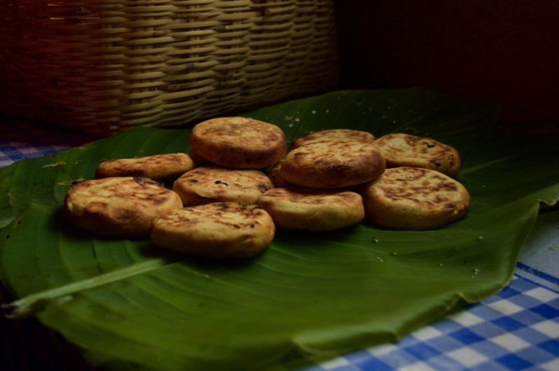

Arepas-Boyacenses
The butter arepa or arepa boyacense is part of the traditions that are maintained today in the municipality of Ramiriquí and other towns in the central area of the Department. Roasted with firewood on a stone slab or with modern methods in industrial gas ovens, arepas are highly recognized for the unbeatable flavor given by the corn flour harvested in the area, the curd or cheese that is made in the homes. and the recipe passed down from generation to generation.
Preparation time
- Total: Apptoximately 120 minutes
- Preparation: 60 minutes
- Cooking: 60 minutes
Instructions
- In a bowl, place the corn flour, wheat flour, water, milk, sugar, Maggi nutiristic seasoning, and heavy cream and knead until all the ingredients are well incorporated.
- Separate the dough into 4 portions, fill with curd, form 4 balls, flatten with your hands and form the arepas.
- Heat a frying pan with the oil over medium heat and grill the arepas for 5 minutes on each side or until they are golden brown.